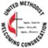

Welcome to Wesley Chapel United Methodist Church
We are a Christ-centered community dedicated to making disciples. We love God, fully trust God with our lives, and live life by grace through faith. We also love and care for others as we share what Jesus Christ has done for us as our Lord and Savior.
We hope that you will come and visit us in the wonderful village of Misenheimer, NC. We hope that you will begin to see why we love to call Wesley Chapel our church home. Maybe you’ll consider making Wesley Chapel UMC your “home” too!
Weekly Service Times:
Sunday
9:45 Soul Morsels – a gathering time with snacks and drinks before Sunday School
10:00 Sunday School for all ages
11:00 Traditional Worship in the Sanctuary
Playschool :
If you are looking for information about our Playschool program, which has provided quality education to 3 and 4 year olds in our area for over 30 years, please see the Misenheimer Community Playschool Program at Wesley Chapel.
Hours: 9 AM to 12 noon on Tuesday, Wednesday, and Thursday during school calendar year.
The People of the United Methodist Church has named Wesley Chapel UMC as a Welcoming Church 